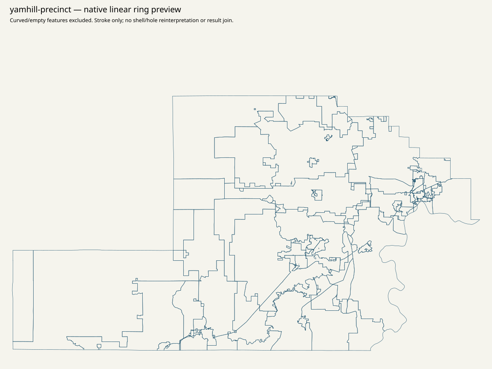

Canonical statewide native order / top15 / minimum80 / priority / remainder: NULL. All36 parents remain in scope. Geographic assets are qualified evidence; no result-leaf polygon joins or spatial vote, ballot or registration allocation.
County elections/Precinct Committeeperson page links an exact public map app -> webmap -> PRCT_41071_112923 layer40. Complete native245 features acquired with all attributes. The layer's literal name suggests a dated product but is not November approval or a result-unit crosswalk; precinct splits/municipal/party-office scopes remain separate. County2010 context is separately labeled.
{
"CRS": "Per-service complete native spatialReference and per-SHP original PRJ retained. PDF CRS unknown unless explicitly printed; no CRS inferred from appearance.",
"access": "Every retained attempt/status/error and captured source clock is in linked receipts. County elections/Precinct Committeeperson page links an exact public map app -> webmap -> PRCT_41071_112923 layer40. Complete native245 features acquired with all attributes. The layer's literal name suggests a dated product but is not November approval or a result-unit crosswalk; precinct splits/municipal/party-office scopes remain separate. County2010 context is separately labeled.",
"finer_ID": "No source row number/name/count/FIPS/shape used as a finer/current result-ID join. Native GIS IDs are retrieval/attribute evidence only.",
"legal": "No approved November2026 legal precinct outline/crosswalk. County2010 outlines and source ring diagnostics do not establish current legal gaps/overlaps/slivers.",
"native_result_membership": "Unknown2024native membership retained; unavailable parent is not a synthetic native unit.",
"physical": "No precinct-to-physical-polling-site crosswalk established. Office, drop box, municipality, ward and ballot style are separate scopes.",
"vintage": "Resource-specific source publication labels/metadata; historical2010 county context is explicitly separate. No same-vintage result/legal approval."
}{
"county": "Yamhill",
"county_fips": "41071",
"county_key": "OR:county:41071",
"county_presidential_reported_votes": 57800,
"county_presidential_named_votes": 57420,
"county_source_Misc": 380,
"native_priority_status": "unavailable_not_acquired_in_bounded_pass",
"native_reporting_unit_count": null,
"source_native_constituents": [],
"source_administrative_presentations": [],
"unknown_native_membership": true,
"approved_current_election": false,
"approved_current_geometry": false,
"historical_originals": [
{
"year": 2020,
"source_key": "2020-35",
"member_name": "11.03.20/Yamhill.csv",
"archive_source_id": "sos-2020-precinct-zip-observed-download",
"original_sha256": "c6ba8dc9c750343dcfd350f5c0305e86c1049f89e28049e6c61da3ddde01c544",
"original_bytes": 550024,
"candidate_native_extraction_status": "see native/county-reconciliation.json; incomplete groups remain explicit"
},
{
"year": 2022,
"source_key": "2022-35",
"member_name": "Yamhill.pdf",
"archive_source_id": "sos-2022-precinct-zip-observed-download",
"original_sha256": "f1f020ff75a61f90fa010048ff941f2b7ae3156a5cc313079df852a14f3b689d",
"original_bytes": 3523451,
"candidate_native_extraction_status": "see native/county-reconciliation.json; incomplete groups remain explicit"
}
]
}{
"full_object_semantic_sha256": "35c42f0f277aa64693688d883958296c57be1c4c431078852bf96f327ddc9a9d",
"pointer": "/all_36_county_parents/35",
"whole_file": {
"bytes": 891659,
"path": "data/turnout/priority-set.json",
"sha256": "06faf77e374172fadabf9b99d5acfd64a5658ccf76e1b4310602bca4274f9add"
}
}Complete snapshot/metadata/page inventory
{'linear_features': 36, 'nonsimple_closed_rings': 0, 'open_rings': 0, 'short_rings': 0}

Complete snapshot/metadata/page inventory
{'linear_features': 245, 'nonsimple_closed_rings': 1, 'open_rings': 0, 'short_rings': 0}

Unknown native membership is retained as one unavailable parent case; it is not a native result row.